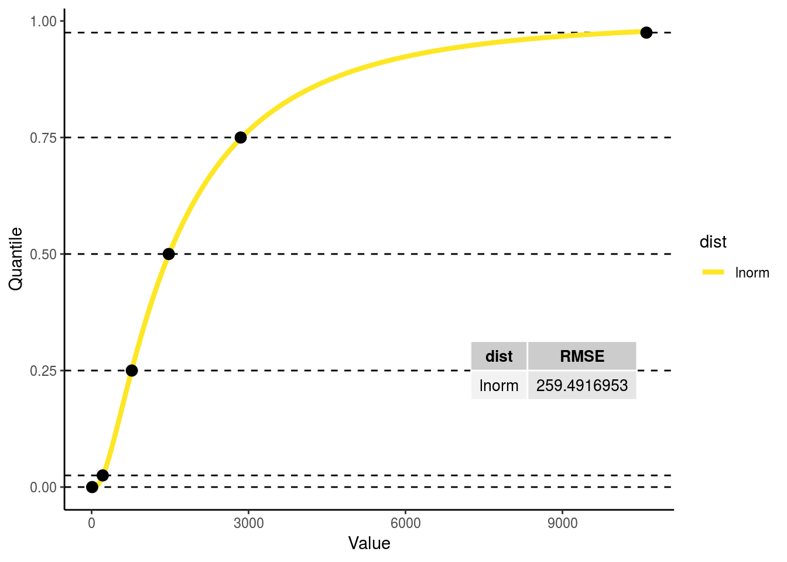
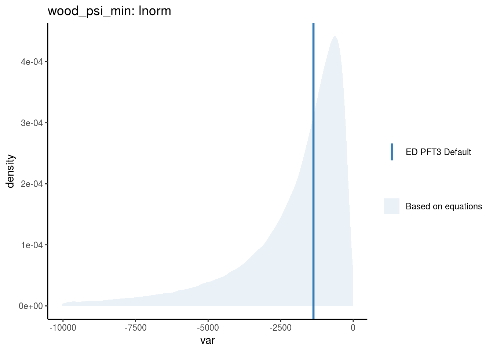
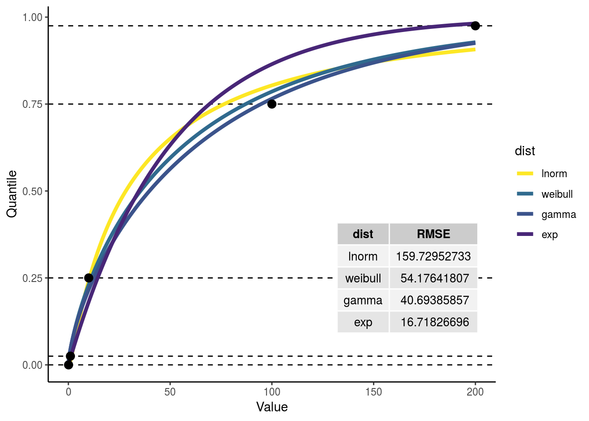
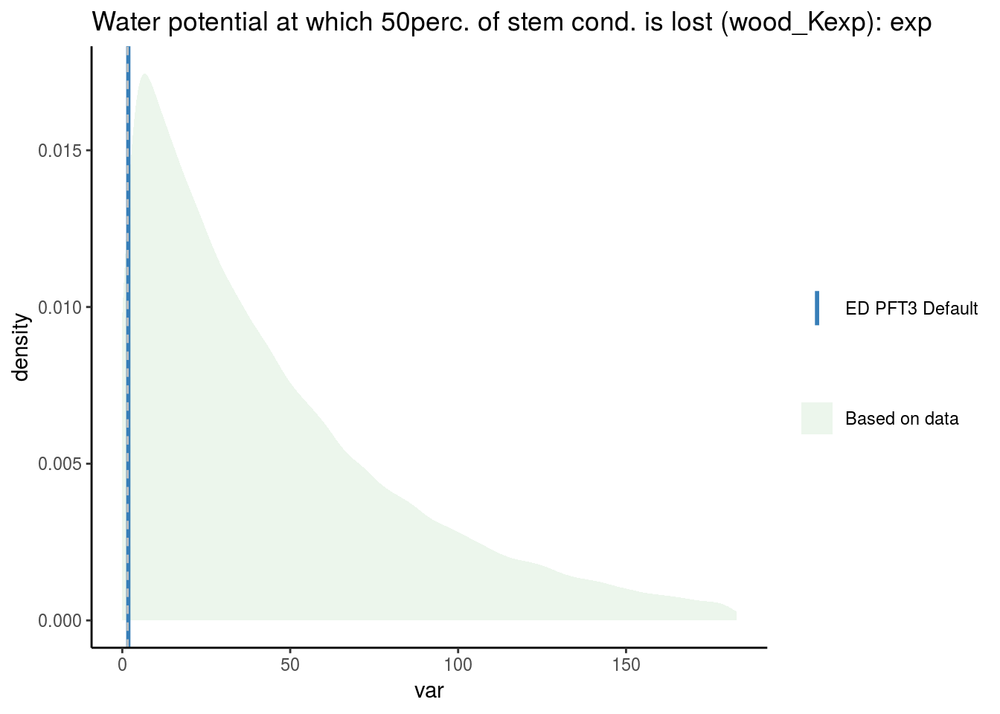

Chapter 4 Key Wood Traits
4.1 Sapwood osmotic water potential at saturation
- ED variable name :
wood_psi_osmotic - ED variable units:
m
Negative units in BETY so we can fit a distribution! - BETY varaible units: -m
4.1.1 Prior data?
- FATES varaiable name:
pinot_node (stem) - FATES variable units:
m
4.1.2 Conversion
MPa to m
i <- which(priors$ED_name == "wood_psi_osmotic")
prior_in <- priors[i, stats] * MPa2m
myfit <- prior_get_fit(prior_in, accepted_dists, plot = TRUE)
myfit$score$dist[which.min(myfit$score$RMSE)]## [1] "weibull"variable_id.in <- tbl(bety,"variables") %>% filter(name == priors$ED_name[i]) %>% pull(id)
phylogeny.in <- "plants"
best.fit.name <- myfit$score$dist[which.min(myfit$score$RMSE)]
best.fit.dat <- myfit$dists %>% select(one_of("Name", best.fit.name)) %>% rename(value := !!best.fit.name, params = Name)
wood_psi_osmotic_prior_id <- prior_input(bety, variable_id.in, phylogeny.in,
dist.name.in = best.fit.name,
parama.in = best.fit.dat %>% filter(params == "Para1") %>% pull(value),
paramb.in = best.fit.dat %>% filter(params == "Para2") %>% pull(value),
paramc.in = best.fit.dat %>% filter(params == "Para3") %>% pull(value))## [1] "Entry with id = 1000000410 already exists. Parameters look the same. Old: weibull(2.4100, 237.4600) New: weibull(2.4100, 237.4600)"wood_psi_osmotic_fit <- tbl(bety, "priors") %>% filter(id == wood_psi_osmotic_prior_id) %>% collect()
wood_psi_osmotic_prior <- -rdistn(wood_psi_osmotic_fit)
wood_psi_osmotic_default <- get_ED_default(PFT3_defaults_history, "wood_psi_osmotic")
prior_plot(prior = wood_psi_osmotic_prior,
q = c(0,1),
plot_default = wood_psi_osmotic_default,
title = sprintf("Sapwood osmotic water potential at saturation (wood_psi_osmotic): %s", wood_psi_osmotic_fit$distn),
type = "data")
4.2 Sapwood bulk elastic modulus
- ED variable name :
wood_elastic_mod - ED variable units:
MPaNote! This is the only case in which MPa is used instead of m!
4.2.1 Prior data?
- FATES varaiable name:
epsil_node (stem) - FATES variable units:
MPa
4.2.2 Conversion
None!
i <- which(priors$ED_name == "wood_elastic_mod")
prior_in <- priors[i,]
myfit <- prior_get_fit(prior_in, accepted_dists, plot = TRUE)
variable_id.in <- tbl(bety,"variables") %>% filter(name == priors$ED_name[i]) %>% pull(id)
phylogeny.in <- "plants"
best.fit.name <- myfit$score$dist[which.min(myfit$score$RMSE)]
best.fit.dat <- myfit$dists %>% select(one_of("Name", best.fit.name)) %>% rename(value := !!best.fit.name, params = Name)
wood_elastic_mod_id <- prior_input(bety, variable_id.in, phylogeny.in,
dist.name.in = best.fit.name,
parama.in = best.fit.dat %>% filter(params == "Para1") %>% pull(value),
paramb.in = best.fit.dat %>% filter(params == "Para2") %>% pull(value),
paramc.in = best.fit.dat %>% filter(params == "Para3") %>% pull(value))## [1] "Entry with id = 1000000394 already exists. Parameters look the same. Old: gamma(3.4400, 0.1600) New: gamma(3.4400, 0.1600)"wood_elastic_mod_fit <- tbl(bety, "priors") %>% filter(id == wood_elastic_mod_id) %>% collect()
wood_elastic_mod_prior <- rdistn(wood_elastic_mod_fit)
wood_elastic_mod_default <- get_ED_default("/fs/data3/ecowdery/ED.Hydro/parameters/pft3_defaults_history.xml", "wood_elastic_mod")
prior_plot(prior = wood_elastic_mod_prior,
q = c(0,1),
plot_default = wood_elastic_mod_default,
title = sprintf("wood bulk elastic modulus (wood_elastic_mod): %s", wood_elastic_mod_fit$distn),
type = "data")
4.3 Sapwood water content at saturation
- ED variable name:
wood_water_sat - ED variable units:
kg H2O/kg biomass
4.3.1 Prior data?
- FATES variable name:
thetas_node (stem) - FATES variable units:
kg kg-1
4.3.2 Conversion
multiply by the density of water over wood density
i <- which(priors$ED_name == "wood_water_sat")
myfit_0 <- prior_get_fit(priors[i,], accepted_dists, plot = FALSE)
myfit_0$score$dist[which.min(myfit_0$score$RMSE)]## [1] "norm"# I'm skipping steps here for the sake of time and sanity
# Normal is the best fit
wood_water_sat_prior_0 <- rnorm(100000, myfit_0$dists$norm[1], myfit_0$dists$norm[2])
wood_water_sat_sample <- wood_water_sat_prior_0 * (wdns/(wood_density_prior * 1e3))
# Note that here we have to multiply by 1e3 because of the units of wood density
# In this case I'm not using the function I built because here it wouldn't make sense.
prior_in <- data.frame(low.025 = quantile(wood_water_sat_sample, c(.025), na.rm = TRUE),
low.25 = quantile(wood_water_sat_sample, c(.25), na.rm = TRUE),
mean = quantile(wood_water_sat_sample, c(.5), na.rm = TRUE),
upp.75 = quantile(wood_water_sat_sample, c(.75), na.rm = TRUE),
upp.975 = quantile(wood_water_sat_sample, c(.975), na.rm = TRUE))
myfit <- prior_get_fit(prior_in, accepted_dists, plot = TRUE)## Warning: Unknown columns: `theor.min`, `theor.max`
variable_id.in <- tbl(bety,"variables") %>% filter(name == priors$ED_name[i]) %>% pull(id)
phylogeny.in <- "plants"
best.fit.name <- myfit$score$dist[which.min(myfit$score$RMSE)]
best.fit.dat <- myfit$dists %>% select(one_of("Name", best.fit.name)) %>% rename(value := !!best.fit.name, params = Name)
wood_water_sat_prior_id <- prior_input(bety, variable_id.in, phylogeny.in,
dist.name.in = best.fit.name,
parama.in = best.fit.dat %>% filter(params == "Para1") %>% pull(value),
paramb.in = best.fit.dat %>% filter(params == "Para2") %>% pull(value),
paramc.in = best.fit.dat %>% filter(params == "Para3") %>% pull(value))## [1] "Entry with id = 1000000415 already exists. Parameters look different. Old: gamma(14.2200, 16.8600) New: gamma(14.2100, 16.8800)"wood_water_sat_fit <- tbl(bety, "priors") %>% filter(id == wood_water_sat_prior_id) %>% collect()
wood_water_sat_prior <- rdistn(wood_water_sat_fit)
wood_water_sat_density <- get_ED_default("/fs/data3/ecowdery/ED.Hydro/parameters/pft3_defaults_history.xml", "wood_water_sat")
prior_plot(prior = wood_water_sat_prior,
q = c(0,.995),
plot_default = wood_water_sat_density,
title = sprintf("Wood water content at saturation (wood_water_sat): %s", wood_water_sat_fit$distn),
type = "mixed")## Warning: Removed 500 rows containing non-finite values (stat_density).
4.4 Sapwood water potential at turgor loss point
- ED variable name:
wood_psi_tlp - ED variable units:
m
Negative units in BETY so we can fit a distribution!
- BETY varaible units:
-m
4.5 Prior data?
There is a FATES parameter but it is calculated from other parameters
- FATES variable name:
pitlp_node - FATES variable units:
MPa
Constraints we added - wood_psi_tlp > .1 MPa (this was given as a boundary for other psi variables)
4.5.1 Calculation and conversion
Calculated from other parameters:
wood_psi_osmoticandwood_elastic_modRemember that
wood_elastic_modisMPa, where everything else ism!
wood_psi_tlp_samp =
(wood_psi_osmotic_prior * wood_elastic_mod_prior * MPa2m)/
(wood_psi_osmotic_prior + wood_elastic_mod_prior * MPa2m)wood_psi_tlp_samp <-
(wood_psi_osmotic_prior * wood_elastic_mod_prior * MPa2m)/
(wood_psi_osmotic_prior + wood_elastic_mod_prior * MPa2m)
summary(wood_psi_tlp_samp)## Min. 1st Qu. Median Mean 3rd Qu. Max.
## -255906.124 -326.835 -232.120 -227.949 -153.967 3614459.456i <- which(priors$ED_name == "wood_psi_tlp")
prior_in <- priors[i,stats] * MPa2m # Convert from MPa to m
prior_in <- prior_add_samp_data(prior_in, samp = -wood_psi_tlp_samp)
prior_in[,stats]## theor.min low.025 low.25 mean upp.75 upp.975
## 1 10.19716213 51.36003884 153.9666377 232.1202326 326.8350582 607.9550515
## theor.max
## 1 NAmyfit <- prior_get_fit(prior_in, accepted_dists, plot = TRUE)
variable_id.in <- tbl(bety, "variables") %>% filter(name == "wood_psi_tlp") %>% pull(id)
phylogeny.in <- "plants"
best.fit.name <- myfit$score$dist[which.min(myfit$score$RMSE)]
best.fit.dat <- myfit$dists %>% select(one_of("Name", best.fit.name)) %>% rename(value := !!best.fit.name, params = Name)
wood_psi_tlp_prior_id <- prior_input(bety, variable_id.in, phylogeny.in,
dist.name.in = best.fit.name,
parama.in = best.fit.dat %>% filter(params == "Para1") %>% pull(value),
paramb.in = best.fit.dat %>% filter(params == "Para2") %>% pull(value),
paramc.in = best.fit.dat %>% filter(params == "Para3") %>% pull(value))## [1] "Entry with id = 1000000416 already exists. Parameters look the same. Old: lnorm(5.4300, 0.5500) New: lnorm(5.4300, 0.5500)"wood_psi_tlp_fit <- tbl(bety, "priors") %>% filter(id == wood_psi_tlp_prior_id) %>% collect()
wood_psi_tlp_prior <- -rdistn(wood_psi_tlp_fit) # Remember to flip back over for psi
wood_psi_tlp_default <- get_ED_default("/fs/data3/ecowdery/ED.Hydro/parameters/pft3_defaults_history.xml", "wood_psi_tlp")
# plot(density(wood_psi_tlp_prior), main = "wood_psi_tlp prior")
# abline(v = get_ED_default("/fs/data3/ecowdery/ED.Hydro/parameters/pft3_defaults_history.xml", "wood_psi_tlp"), col = "blue", lwd = 2)
# abline(v = quantile(wood_psi_osmotic_prior, c(.025, .975)), lty = 2)
# legend("topleft",legend=c("Prior", "95% CI", "ED PFT 3 Default"), col=c("black", "black","blue"), lwd = c(2,1,2), lty = c(1,2,1))
prior_plot(prior = wood_psi_tlp_prior,
q = c(.005,1),
plot_default = wood_psi_tlp_default,
title = sprintf("(wood_psi_tlp): %s", wood_psi_tlp_fit$distn),
type = "equation")## Warning: Removed 500 rows containing non-finite values (stat_density).
4.6 Wood hydaulic capacitance.
- ED variable name :
wood_water_cap - ED variable units:
kg H2O/kg biomass/m
Different units in BETY so we can fit a distribution! The numbers were so small that I couldn’t get the fitting function to work until I scaled the variable up!
- BETY varaible units:
g H2O / kg biomass / m
4.6.1 Prior data?
No FATES variables
Constraints we added - wood_water_cap > 1e-07 kg H2O/kg biomass/m
4.6.2 Calculation
Calculated entirely from priors
wood_water_cap_samp <-
1000 * (1 - wood_psi_osmotic_prior / (4 * wood_psi_tlp_prior)) *
(wood_water_sat_prior / (4 * abs(wood_psi_tlp_prior)))
summary(wood_water_cap_samp)## Min. 1st Qu. Median Mean 3rd Qu. Max.
## -28.9115464 0.4447782 0.6262298 0.6827142 0.8644455 5.4216685i <- which(priors$ED_name == "wood_water_cap")
prior_in <- priors[i,stats]
prior_in <- prior_add_samp_data(prior_in, samp = wood_water_cap_samp)
prior_in[,stats]## # A tibble: 1 x 7
## theor.min low.025 low.25 mean upp.75 upp.975 theor.max
## <dbl> <dbl> <dbl> <dbl> <dbl> <dbl> <dbl>
## 1 0.0000001 0.184 0.445 0.626 0.864 1.62 NAmyfit <- prior_get_fit(prior_in, accepted_dists, plot = TRUE)
variable_id.in <- tbl(bety, "variables") %>% filter(name == "wood_water_cap") %>% pull(id)
phylogeny.in <- "plants"
best.fit.name <- myfit$score$dist[which.min(myfit$score$RMSE)]
best.fit.dat <- myfit$dists %>% select(one_of("Name", best.fit.name)) %>% rename(value := !!best.fit.name, params = Name)
wood_water_cap_prior_id <- prior_input(bety, variable_id.in, phylogeny.in,
dist.name.in = best.fit.name,
parama.in = best.fit.dat %>% filter(params == "Para1") %>% pull(value),
paramb.in = best.fit.dat %>% filter(params == "Para2") %>% pull(value),
paramc.in = best.fit.dat %>% filter(params == "Para3") %>% pull(value))## [1] "Entry with id = 1000000417 already exists. Parameters look different. Old: lnorm(-0.4700, 0.4900) New: lnorm(-0.4700, 0.5000)"wood_water_cap_fit <- tbl(bety, "priors") %>% filter(id == wood_water_cap_prior_id) %>% collect()
wood_water_cap_prior <- rdistn(wood_water_cap_fit) * (1/1000) # Convert back to kg
wood_water_cap_default <- get_ED_default("/fs/data3/ecowdery/ED.Hydro/parameters/pft3_defaults_history.xml", "wood_water_cap")
prior_plot(prior = wood_water_cap_prior,
q = c(0,.975),
plot_default = wood_water_cap_default,
title = sprintf("(wood_water_cap): %s", wood_water_cap_fit$distn),
type = "equation")## Warning: Removed 2500 rows containing non-finite values (stat_density).
4.7 Sapwood minimum relative water content or Sapwood residual fraction
- ED variable name :
wood_psi_min - Ed variable units:
m
Negative units in BETY so we can fit a distribution!
- BETY varaible units:
-m
4.8 Prior data?
There are no FATES parameters
Constraints we added - wood_psi_min > .1 MPa (this was given as a boundary for other psi variables)
4.8.1 Calculation
Calculated from other priors.
Should I put wood_rwc_min and rwc_tlp_wood in the database too?
rwc_tlp_wood_samp <- 1. - (1. - 0.75 * wood_density_prior) / (2.74 + 2.01 * wood_density_prior)
wood_rwc_min_samp = wood_elastic_mod_prior * (1. - rwc_tlp_wood_samp) / (wood_psi_osmotic_prior / MPa2m) + 1.
wood_psi_min_samp = (wood_rwc_min_samp - 1.) * wood_water_sat_prior / wood_water_cap_prior
# Add in the max an min from the priors table
i <- which(priors$ED_name == "wood_psi_min")
prior_in <- priors[i,stats] * MPa2m # Convert from MPa to m
prior_in <- prior_add_samp_data(prior_in, samp = -wood_psi_min_samp)
prior_in[,stats]## theor.min low.025 low.25 mean upp.75 upp.975
## 1 10.19716213 211.8308593 768.0953208 1474.752162 2849.736968 10605.02933
## theor.max
## 1 NAmyfit <- prior_get_fit(prior_in, accepted_dists, plot = TRUE)
variable_id.in <- tbl(bety, "variables") %>% filter(name == "wood_psi_min") %>% pull(id)
phylogeny.in <- "plants"
best.fit.name <- myfit$score$dist[which.min(myfit$score$RMSE)]
best.fit.dat <- myfit$dists %>% select(one_of("Name", best.fit.name)) %>% rename(value := !!best.fit.name, params = Name)
wood_psi_min_prior_id <- prior_input(bety, variable_id.in, phylogeny.in,
dist.name.in = best.fit.name,
parama.in = best.fit.dat %>% filter(params == "Para1") %>% pull(value),
paramb.in = best.fit.dat %>% filter(params == "Para2") %>% pull(value),
paramc.in = best.fit.dat %>% filter(params == "Para3") %>% pull(value))## [1] "Entry with id = 1000000419 already exists. Parameters look the same. Old: lnorm(7.3000, 0.9800) New: lnorm(7.3000, 0.9800)"wood_psi_min_fit <- tbl(bety, "priors") %>% filter(id == wood_psi_min_prior_id) %>% collect()
wood_psi_min_prior <- -rdistn(wood_psi_min_fit) # Remember to flip psi
default_wood_psi_min <- get_ED_default("/fs/data3/ecowdery/ED.Hydro/parameters/pft3_defaults_history.xml", "wood_psi_min")
prior_plot(prior = wood_psi_min_prior,
q = c(.025,1),
plot_default = default_wood_psi_min,
title = sprintf("wood_psi_min: %s", wood_psi_min_fit$distn),
type = "equation")## Warning: Removed 2500 rows containing non-finite values (stat_density).
4.9 Maximum hydraulic conductivity of the stem
- ED variable name :
wood_Kmax - ED variable units:
kg H2O / m / sNote! This is the only case in which MPa is used instead of m!
4.9.1 Prior data?
- FATES varaiable name:
kmax_node - FATES variable units:
kg m-1 s-1 MPa-1
4.9.2 Conversion
I don’t think we need to multiply by the density of water … which is confusing.
i <- which(priors$ED_name == "wood_Kmax")
prior_in <- priors[i, stats] / MPa2m
myfit <- prior_get_fit(prior_in, accepted_dists, plot = TRUE)
myfit$score$dist[which.min(myfit$score$RMSE)]## [1] "exp"variable_id.in <- tbl(bety,"variables") %>% filter(name == priors$ED_name[i]) %>% pull(id)
phylogeny.in <- "plants"
best.fit.name <- myfit$score$dist[which.min(myfit$score$RMSE)]
best.fit.dat <- myfit$dists %>% select(one_of("Name", best.fit.name)) %>% rename(value := !!best.fit.name, params = Name)
wood_Kmax_prior_id <- prior_input(bety, variable_id.in, phylogeny.in,
dist.name.in = best.fit.name,
parama.in = best.fit.dat %>% filter(params == "Para1") %>% pull(value),
paramb.in = best.fit.dat %>% filter(params == "Para2") %>% pull(value),
paramc.in = best.fit.dat %>% filter(params == "Para3") %>% pull(value))## [1] "Entry with id = 1000000418 already exists. Parameters look the same. Old: exp(32.6600) New: exp(32.6600)"wood_Kmax_fit <- tbl(bety, "priors") %>% filter(id == wood_Kmax_prior_id) %>% collect()
wood_Kmax_prior <- rdistn(wood_Kmax_fit) # NOTE: Need to convert to m from -m
wood_Kmax_default <- get_ED_default("/fs/data3/ecowdery/ED.Hydro/parameters/pft3_defaults_history.xml", "wood_Kmax")
prior_plot(prior = wood_Kmax_prior,
q = c(0,.975),
plot_default = wood_Kmax_default,
title = sprintf("Maximum hydraulic conductivity of the stem (wood_Kmax): %s", wood_Kmax_fit$distn),
type = "data")## Warning: Removed 2500 rows containing non-finite values (stat_density).
4.10 Water potential at which 50% of stem conductivity is lost
- ED variable name :
wood_psi50 - ED variable units:
m
NOTE: There is an ERROR in the ED code for the equation for wood_psi50
Should be:
(-1.09-(3.57 * rho(ipft) ^ 1.73) * MPa2m
Negative units in BETY so we can fit a distribution!
- BETY varaible units:
-m
4.10.1 Prior data?
- FATES varaiable name:
p50_node (stem) - FATES variable units:
MPa
4.10.2 Conversion
MPa to m
This one is tricky, do we keep the normal distribution because it’s the best fit?
i <- which(priors$ED_name == "wood_psi50")
prior_in <- priors[i, stats] * MPa2m
prior_in## theor.min low.025 low.25 mean upp.75 upp.975
## 1 10.19716213 50.98581065 101.9716213 NA 407.8864852 611.8297278
## theor.max
## 1 NAmyfit <- prior_get_fit(prior_in, accepted_dists, plot = TRUE)
myfit$score$dist[which.min(myfit$score$RMSE)]## [1] "norm"variable_id.in <- tbl(bety,"variables") %>% filter(name == priors$ED_name[i]) %>% pull(id)
phylogeny.in <- "plants"
best.fit.name <- myfit$score$dist[which.min(myfit$score$RMSE)]
best.fit.dat <- myfit$dists %>% select(one_of("Name", best.fit.name)) %>% rename(value := !!best.fit.name, params = Name)
wood_psi50_prior_id <- prior_input(bety, variable_id.in, phylogeny.in,
dist.name.in = best.fit.name,
parama.in = best.fit.dat %>% filter(params == "Para1") %>% pull(value),
paramb.in = best.fit.dat %>% filter(params == "Para2") %>% pull(value),
paramc.in = best.fit.dat %>% filter(params == "Para3") %>% pull(value))## [1] "Entry with id = 1000000360 already exists. Parameters look the same. Old: norm(284.6500, 176.3200) New: norm(284.6500, 176.3200)"wood_psi50_fit <- tbl(bety, "priors") %>% filter(id == wood_psi50_prior_id) %>% collect()
wood_psi50_prior <- -rdistn(wood_psi50_fit) # NOTE: Need to convert to m from -m
# Calculating default by hand because it is calculated wrong in ED!
wood_psi50_default <- (-1.09 - (3.57 * default_wood_density ^ 1.73)) * MPa2m
wrong_wood_psi50_default <- get_ED_default(PFT3_defaults_history, "wood_psi50")
p <- prior_plot(prior = wood_psi50_prior,
q = c(0,1),
plot_default = wood_psi50_default,
title = sprintf("Water potential at which 50perc. of stem cond. is lost (wood_psi50): %s", wood_psi50_fit$distn),
type = "data")
p +
geom_vline(aes(xintercept = wrong_wood_psi50_default), color = "gray", linetype = "dashed") +
geom_vline(aes(xintercept = quantile(wood_psi50_prior, .975)), color = "blue", linetype = "dashed")
quantile(wood_psi50_prior, .975)## 97.5%
## 61.8466981A positive number is within the 95% CI of the distribution so in this case, I’m going to choose a log normal distriburtion even though it is not the best fit. Hopefully this can also be fixed given that we have data for both psi50 and Kexp…
best.fit.name <- "lnorm"
best.fit.dat <- myfit$dists %>% select(one_of("Name", best.fit.name)) %>% rename(value := !!best.fit.name, params = Name)
wood_psi50_prior_id <- prior_input(bety, variable_id.in, phylogeny.in,
dist.name.in = best.fit.name,
parama.in = best.fit.dat %>% filter(params == "Para1") %>% pull(value),
paramb.in = best.fit.dat %>% filter(params == "Para2") %>% pull(value),
paramc.in = best.fit.dat %>% filter(params == "Para3") %>% pull(value))## [1] "Entry with id = 1000000420 already exists. Parameters look the same. Old: lnorm(5.2800, 0.8500) New: lnorm(5.2800, 0.8500)"wood_psi50_fit <- tbl(bety, "priors") %>% filter(id == wood_psi50_prior_id) %>% collect()
wood_psi50_prior <- -rdistn(wood_psi50_fit) # NOTE: Need to convert to m from -m
# Calculating default by hand because it is calculated wrong in ED!
wood_psi50_default <- (-1.09 - (3.57 * default_wood_density ^ 1.73)) * MPa2m
wrong_wood_psi50_default <- get_ED_default(PFT3_defaults_history, "wood_psi50")
prior_plot(prior = wood_psi50_prior,
q = c(0.025,1),
plot_default = wood_psi50_default,
title = sprintf("Water potential at which 50perc. of stem cond. is lost (wood_psi50): %s", wood_psi50_fit$distn),
type = "data") ## Warning: Removed 2500 rows containing non-finite values (stat_density).
4.11 Exponent for the hydraulic vulnerability curve of stem conductivity
… under the Weibull function 1/(1+(psi/psi50) ^ Kexp_stem)
- ED variable name :
wood_Kexp - ED variable units: unitless
4.11.1 Prior data?
- FATES varaiable name:
avuln_node (stem) - FATES variable units: unitless
4.11.2 Conversion
None!
4.11.3 Calculation
i <- which(priors$ED_name == "wood_Kexp")
prior_in <- priors[i, stats]
prior_in## # A tibble: 1 x 7
## theor.min low.025 low.25 mean upp.75 upp.975 theor.max
## <dbl> <dbl> <dbl> <dbl> <dbl> <dbl> <dbl>
## 1 0.1 1 10 NA 100 200 NAmyfit <- prior_get_fit(prior_in, accepted_dists, plot = TRUE)
myfit$score$dist[which.min(myfit$score$RMSE)]## [1] "exp"variable_id.in <- tbl(bety,"variables") %>% filter(name == priors$ED_name[i]) %>% pull(id)
phylogeny.in <- "plants"
best.fit.name <- myfit$score$dist[which.min(myfit$score$RMSE)]
best.fit.dat <- myfit$dists %>% select(one_of("Name", best.fit.name)) %>% rename(value := !!best.fit.name, params = Name)
wood_Kexp_prior_id <- prior_input(bety, variable_id.in, phylogeny.in,
dist.name.in = best.fit.name,
parama.in = best.fit.dat %>% filter(params == "Para1") %>% pull(value),
paramb.in = best.fit.dat %>% filter(params == "Para2") %>% pull(value),
paramc.in = best.fit.dat %>% filter(params == "Para3") %>% pull(value))## [1] "Entry with id = 1000000421 already exists. Parameters look the same. Old: exp(0.0200) New: exp(0.0200)"wood_Kexp_fit <- tbl(bety, "priors") %>% filter(id == wood_Kexp_prior_id) %>% collect()
wood_Kexp_prior <- rdistn(wood_Kexp_fit)
# Calculating default by hand because psi50 is calculated wrong in ED!
wood_Kexp_default <- 0.544 * 4. * (-wood_psi50_default / MPa2m) ^ (-0.17)
wrong_wood_Kexp_default <- get_ED_default(PFT3_defaults_history, "wood_Kexp")
p <- prior_plot(prior = wood_Kexp_prior,
q = c(0,.975),
plot_default = wood_Kexp_default,
title = sprintf("Water potential at which 50perc. of stem cond. is lost (wood_Kexp): %s", wood_Kexp_fit$distn),
type = "data")
p +
geom_vline(aes(xintercept = wrong_wood_Kexp_default), color = "gray", linetype = "dashed") ## Warning: Removed 2500 rows containing non-finite values (stat_density).
Note: here the miscalculation of psi50 in the code barely shows up because the value is divided by a large number.